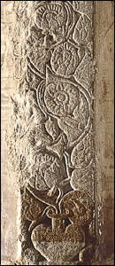
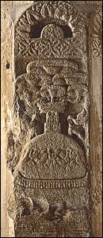

|

The purnaghata is the urn of plenty. This scene shows lotuses and trumpets flowing from the neck of a purnaghata.

The stupa was a symbol of the Buddha's death. Umbrellas were sometimes mounted at the top of stupas as a sign of honour and respect.
|